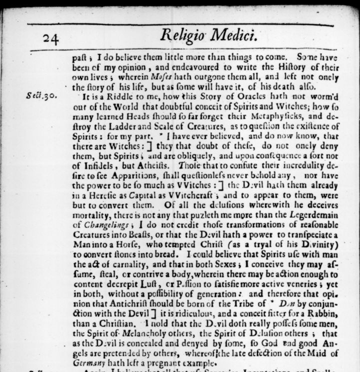

“I have ever believed, and do now know, that there are Witches” (section 30, p. 24)
English: London, 1672, p. 24, scan. Long s modernised; the brackets ] in the print mark the phrases annotated at the back. Highlighted: Lecky’s quotation.

It is a Riddle to me, how this Story of Oracles hath not worm’d out of the World that doubtful conceit of Spirits and Witches; how so many learned Heads should so far forget their Metaphysicks, and destroy the Ladder and Scale of Creatures, as to question the existence of Spirits: for my part, I have ever believed, and do now know, that there are Witches: they that doubt of these, do not onely deny them, but Spirits; and are obliquely, and upon consequence a sort not of Infidels, but Atheists. Those that to confute their incredulity desire to see Apparitions, shall questionless never behold any, nor have the power to be so much as Witches: the Devil hath them already in a Heresie as Capital as Witchcraft; and to appear to them, were but to convert them. Of all the delusions wherewith he deceives mortality, there is not any that puzleth me more than the Legerdemain of Changelings; I do not credit those transformations of reasonable Creatures into Beasts, or that the Devil hath a power to transpeciate a Man into a Horse, who tempted Christ (as a tryal of his Divinity) to convert stones into bread. I could believe that Spirits use with man the act of carnality, and that in both Sexes; I conceive they may assume, steal, or contrive a body, wherein there may be action enough to content decrepit Lust, or Passion to satisfie more active veneries; yet in both, without a possibility of generation: and therefore that opinion that Antichrist should be born of the Tribe of Dan by conjunction with the Devil, is ridiculous, and a conceit fitter for a Rabbin, than a Christian. I hold that the Devil doth really possess some men, the Spirit of Melancholy others, the Spirit of Delusion others; that as the Devil is concealed and denyed by some, so God and good Angels are pretended by others, whereof the late defection of the Maid of Germany hath left a pregnant example.
Lecky says that Browne “did not, however, believe in incubi, or in lycanthropy”. The second is right (“I do not credit those transformations of reasonable Creatures into Beasts”); the first is not quite: Browne allows that spirits may have intercourse with men and women, and denies only that children could result.
The annotator disagrees (Annotations, p. 100)
English: the annotations printed at the back of the same edition, p. 100, “Sect. 30. Pag. 24.”, scan. Latin translated in brackets.
I have ever believed, and do now know that there are Witches] What sort of Witches they were that the Author knew to be such, I cannot tell; for those which he mentions in the next Section, which proceed upon the principles of Nature, none have denyed that such there are; against such it was, that the Lex Julia de veneficiis was made, that is, those, Qui noxio poculo aut impuris medicaminibus aliquem fuerint insectati [who have attacked anyone with a harmful drink or foul drugs] … But for the opinion that there are Witches which co-operate with the Devil, there are Divines of great note, and far from any suspicion of being irreligious, that do oppose it. Certainly there is no ground to maintain their being from the story of Oracles …
By conjunction with the Devil] Though, as the Author saith, it be without a possibility of Generation, yet there are great men that hold, that such carnality is performed; as August. in Levit., Aquin. … and Justin Martyr, Apol. 1.
Backlinks
Every place in Rationalism in Europe that links to this page (generated automatically when the site is built).
- Chapter I: note 107